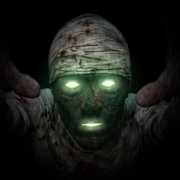

Bep Beep
Support
Bep Beep listens to Morse code from a radio and turns it into a bunker location and its door code. It is made for DayZ players on the Nasdara map, frequency 80.0.
How to use it
- Tune to frequency 80.0 in the game and put your iPhone by the speaker or headphones.
- Tap Record. A long silence marks where a message starts and ends.
- Record at least one whole message (about 80 seconds) and tap Stop. The app translates it by itself.
If it does not read anything
- Turn the game up and move the phone closer to the speaker. The Microphone meter should jump with each beep.
- Close apps that are playing or streaming audio — they can interrupt the microphone.
- Record from one long silence to the next so the message is complete.
Contact
Report a bug or ask a question through the issue page on GitHub.
Unofficial fan-made tool. Not affiliated with or endorsed by Bohemia Interactive. DayZ is a trademark of Bohemia Interactive.
Podpora
Bep Beep poslouchá morzeovku z vysílačky a překládá ji na polohu bunkru a kód ke dveřím. Je určený hráčům DayZ na mapě Nasdara, frekvence 80.0.
Jak na to
- Nalaď ve hře frekvenci 80.0 a polož iPhone k reproduktoru nebo sluchátkům.
- Klepni na Nahrávat. Začátek a konec zprávy poznáš podle dlouhého ticha.
- Nahraj aspoň jednu celou zprávu (asi 80 sekund) a klepni na Zastavit. Aplikace ji sama přeloží.
Když to nečte
- Zesil hru a dej telefon blíž k reproduktoru. Ukazatel Mikrofon by měl při pípání skákat.
- Vypni aplikace, které zrovna přehrávají nebo streamují zvuk — mohou mikrofon přerušovat.
- Nahrávej od jednoho dlouhého ticha k dalšímu, ať je zpráva celá.
Kontakt
Chybu nebo dotaz nahlas přes stránku hlášení na GitHubu.
Neoficiální fanouškovský nástroj. Není spojen s Bohemia Interactive ani jimi schválen. DayZ je ochranná známka společnosti Bohemia Interactive.